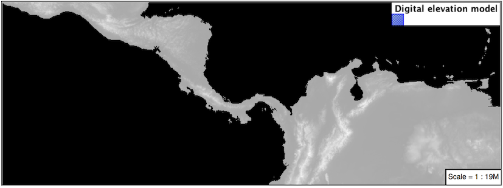

5.5. Rasters¶
Finally we will look at using MBStyle styling for the portrayal of raster data.
Raster Symbology¶
Review of raster symbology:
Raster data is Grid Coverage where values have been recorded in a regular array. In OGC terms a Coverage can be used to look up a value or measurement for each location.
When queried with a “sample” location:
A grid coverage can determine the appropriate array location and retrieve a value. Different techniques may be used interpolate an appropriate value from several measurements (higher quality) or directly return the “nearest neighbor” (faster).
A vector coverages would use a point-in-polygon check and return an appropriate attribute value.
A scientific model can calculate a value for each sample location
Many raster formats organize information into bands of content. Values recorded in these bands and may be mapped into colors for display (a process similar to theming an attribute for vector data).
For imagery the raster data is already formed into red, green and blue bands for display.
As raster data has no inherent shape, the format is responsible for describing the orientation and location of the grid used to record measurements.
These raster examples use a digital elevation model consisting of a single band of height measurements. The imagery examples use an RGB image that has been hand coloured for use as a base map.
Since MBStyle is primarily intended for client-side styling, it doesn’t have much ability to style raster data when compared with SLD, so this section will be much shorter than the equivalent raster sections for CSS and YSLD.
Reference:
Point (User Manual | SLD Reference )
The exercise makes use of the usgs:dem and ne:ne1 layers.
5.5.1. Image¶
The raster layer controls the display of raster data.
Navigate to the Styles page.
Click Add a new style and choose the following:
Name:
image_example
Workspace:
No workspace
Format:
MBStyle
Replace the initial MBStyle definition with:
{ "name": "image_example", "version": 8, "layers": [ { "id": "image_example", "type": "raster", "source-layer": "ne:ne1", "paint": { "raster-opacity": 1 } } ] }
And use the Layer Preview tab to preview the result.

5.5.2. DEM¶
A digital elevation model is an example of raster data made up of measurements, rather than color information.
The usgs:dem layer used for this exercise:
Return to the Styles page.
Click Add a new style and choose the following:
Name:
raster_example
Workspace:
No workspace
Format:
MBStyle
The rendering engine will select our single band of raster content, and do its best to map these values into a grayscale image. Replace the content of the style with:
{ "name": "raster_example", "version": 8, "layers": [ { "id": "raster_example", "type": "raster", "source-layer": "usgs:dem", "paint": { "raster-opacity": 1 } } ] }
Use the Layer Preview tab to preview the result. The range produced in this case from the highest and lowest values.

5.5.2.1. Bonus¶
5.5.3. Challenge Raster Opacity¶
There is a quick way to make raster data transparent, raster opacity property works in the same fashion as with vector data. The raster as a whole will be drawn partially transparent allow content from other layers to provide context.
Challenge: Can you think of an example where this would be useful?
Note
Discussion provided at the end of the workbook.